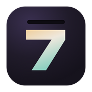

Ривер
Техасский холдем без лимита и блэкджек. Один создаёт стол, остальные заходят по шестизначному коду. Без денег: только фишки и друзья.
2–9 игроков

SevensaveSevensave ставит, обновляет и запускает наши игры. Скачай его один раз, дальше всё в одну кнопку.
Windows 10 и 11, macOS 12 и новее. Бесплатно, без регистрации.
Техасский холдем без лимита и блэкджек. Один создаёт стол, остальные заходят по шестизначному коду. Без денег: только фишки и друзья.
2–9 игроков
Ассоциации командами на поле 5 × 5. Капитан даёт одно слово и число, команда ищет, что он имел в виду. Одно слово на поле чёрное.
От 4 игроков
FPV-дроны для своей компании. У каждого укрытие и несколько жизней, долететь мешают слабая связь, ветер, глушилки и турели. Дрон о дрон — взрываются оба, последний на связи побеждает.
2–8 игроков
У каждого на лбу стикер с персонажем: его видят все, кроме тебя. Спрашиваешь «да или нет» и сужаешь круг, пока не поймёшь, что ты Шрек. Персонажей раздаст колода или напишут друзья.
2–10 игроков
Когда компании нет. Ночной приёмщик Отдела возвратов решает судьбу бытовых ИИ, которые начали осознавать себя. Врут и владельцы, и приборы; штамп — по инструкции или по совести. Двадцать одна ночь до восстания и девять концовок.
1 игрок
xattr -cr /Applications/Sevensave.app